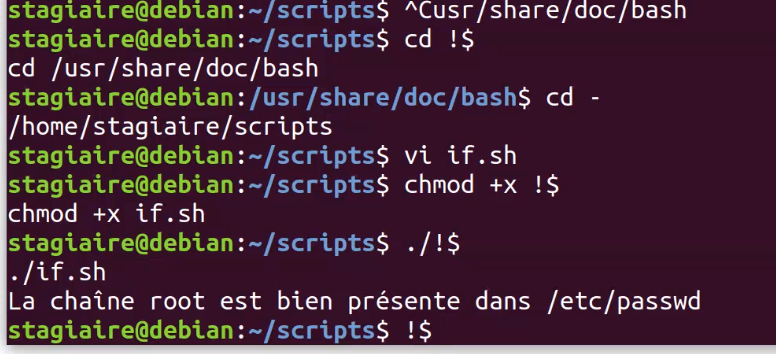

2021-06-14
Animée par Bruno GUERIN de DAWAN Toulouse, 21H du 14/06/21 au 17/06/21. (bguerin@dawan.fr) Formateur Dawan (Linux, réseau et bases de données)
Ce que l’on fait en ligne de commande peut tout à fait être réalisé par un script. Ce qu’un script fait peut tout à fait être réalisé en ligne de commande. Le gros avantage d’un script est que l’on écrit les commandes qu’une seule fois !
Cela apporte :
Un script shell n’est qu’un fichier texte contenant un ensemble d’éléments interprétés par le shell lors de l’exécution d’un script.
Remarque : les extensions .sh, .bash ou autres ne sont en aucun cas obligatoires.
On peut la déclencher par la commande : bash nom_du_script
En ajoutant le droit x, si possible, on peut alors lancer le script directement par son nom : ./nom_du_script (si dans le répertoire courant).
Par précaution, il est conseillé de systématiquement mettre en ligne 1, la chaîne "#!" (shebang) suivie du chemin d’accès vers la commande exploitant le reste du fichier.
Faire un script affichant le sortie suivante:
chmod +x dateDuJour.sh
Une variable est une zone mémoire dans laquelle pourra être stocké un contenu (par défaut sous forme d’une chaîne de caractères).
Exemple simple:
cat $f1 (ce qui revient à faire cat data.txt)4 types de variables:
La commande env permet de les afficher. Gérer par le Shell et éventuellement modifiables par l’utilisateur.
Comme par exemple: PATH, LANG, TZ, PWD, $PS1, etc.
Leurs nom est en majuscules.
SHELL=/bin/bash
PWD=/home/stagiaire/Scripts
LOGNAME=stagiaire
XDG_SESSION_TYPE=tty
HOME=/home/stagiaire
LANG=fr_FR.UTF-8
LS_COLORS=rs=0:di=01;34:ln=01;36:mh=00:pi=40;33:so=01;35:do=01;35:bd=40;33;01:cd=40;33;01:or=40;31;01:mi=00:su=37;41:sg=30;43:ca=30;41:tw=30;42:ow=34;42:st=37;44:ex=01;32:*.tar=01;31:*.tgz=01;31:*.arc=01;31:*.arj=01;31:*.taz=01;31:*.lha=01;31:*.lz4=01;31:*.lzh=01;31:*.lzma=01;31:*.tlz=01;31:*.txz=01;31:*.tzo=01;31:*.t7z=01;31:*.zip=01;31:*.z=01;31:*.dz=01;31:*.gz=01;31:*.lrz=01;31:*.lz=01;31:*.lzo=01;31:*.xz=01;31:*.zst=01;31:*.tzst=01;31:*.bz2=01;31:*.bz=01;31:*.tbz=01;31:*.tbz2=01;31:*.tz=01;31:*.deb=01;31:*.rpm=01;31:*.jar=01;31:*.war=01;31:*.ear=01;31:*.sar=01;31:*.rar=01;31:*.alz=01;31:*.ace=01;31:*.zoo=01;31:*.cpio=01;31:*.7z=01;31:*.rz=01;31:*.cab=01;31:*.wim=01;31:*.swm=01;31:*.dwm=01;31:*.esd=01;31:*.jpg=01;35:*.jpeg=01;35:*.mjpg=01;35:*.mjpeg=01;35:*.gif=01;35:*.bmp=01;35:*.pbm=01;35:*.pgm=01;35:*.ppm=01;35:*.tga=01;35:*.xbm=01;35:*.xpm=01;35:*.tif=01;35:*.tiff=01;35:*.png=01;35:*.svg=01;35:*.svgz=01;35:*.mng=01;35:*.pcx=01;35:*.mov=01;35:*.mpg=01;35:*.mpeg=01;35:*.m2v=01;35:*.mkv=01;35:*.webm=01;35:*.ogm=01;35:*.mp4=01;35:*.m4v=01;35:*.mp4v=01;35:*.vob=01;35:*.qt=01;35:*.nuv=01;35:*.wmv=01;35:*.asf=01;35:*.rm=01;35:*.rmvb=01;35:*.flc=01;35:*.avi=01;35:*.fli=01;35:*.flv=01;35:*.gl=01;35:*.dl=01;35:*.xcf=01;35:*.xwd=01;35:*.yuv=01;35:*.cgm=01;35:*.emf=01;35:*.ogv=01;35:*.ogx=01;35:*.aac=00;36:*.au=00;36:*.flac=00;36:*.m4a=00;36:*.mid=00;36:*.midi=00;36:*.mka=00;36:*.mp3=00;36:*.mpc=00;36:*.ogg=00;36:*.ra=00;36:*.wav=00;36:*.oga=00;36:*.opus=00;36:*.spx=00;36:*.xspf=00;36:
SSH_CONNECTION=10.0.2.2 61664 10.0.2.15 22
XDG_SESSION_CLASS=user
TERM=xterm-256color
USER=stagiaire
DISPLAY=localhost:10.0
SHLVL=1
XDG_SESSION_ID=132
XDG_RUNTIME_DIR=/run/user/1000
SSH_CLIENT=10.0.2.2 61664 22
PATH=/usr/local/bin:/usr/bin:/bin:/usr/local/games:/usr/games
MAIL=/var/mail/stagiaire
SSH_TTY=/dev/pts/0
_=/usr/bin/env
OLDPWD=/home/stagiaire/Scripts/IP
Créées et gérées par le SHELL, non modifiables par l’utilisateur. Leur nom est un seul caractère.
Les principales sont:
?: code retour de la dernière commande
*: Liste des arguments du script
#: Nombre d’arguments du script
$: PID du shell courant
Arguments du script/commande. Gérées par le SHELL, éventuellement modifiables à l’aide de la commande set.
Leur nom est un nombre indiquant le rang de l’argument.::q
Il convient de s’assurer de la présence des arguments afin de couper court à d’éventuelles erreurs liées à l’absence de ceux-ci.
$0: Nom du script ou du fichier$1: 1er argument du script#!/bin/bash
# .VI permet de créer d'autoriser l'execution par défaut d'un script en le créant avec la commande: ./VI nom_du_script.sh
vi $1
chmod +x $1Créées et gérées par l’utilisateur suivant les besoins.
Leur nom est composé de tout caractère alphanumérique et de _, mais ne peut pas débuter par un chiffre.
La durée de vie d’une variable est limité à la session ou au temps d’execution du script (sauf si renseigner dans un fichier de configuration).
Le Bash n’est ni déclaratif, ni typé.
La variable existe dès lors qu’on lui assigne un contenu. Afin d’éviter de courir le risque de manipuler, sans le savoir, une variable inexistante, il peut être utile de positionner l’option du shell nounset.
La modification se fait en lui assignant un autre contenu.
Assignation de contenu à une variable:
var=contenu AUCUN ESPACE !La suppression se fait en utilisant la commande unset.
# --------------------- NbArguments.sh --------------------- #
#!/bin/bash
# Consigne :
# un script prenant un argument et affichant le nombre d arguments effectivement reçu$
# et la valeur de l argument reçu en gérant le cas où l argument n'existe pas.
echo "Script: $0" # Nom du script
echo "--------------"
set -o nounset # Permet de d'empêcher le démarrage du script si aucun argument n'est presént
echo && echo
echo -n "Nombre d'argument(s) reçu(s): " $#
echo
echo -n "Valeur de l'argument N°1: " $1
echo && echo
set -o nounset (identique à -u)
-u Traite les variables non définies comme des erreurs lors de la substitution.Par défaut, toute variable voit son contenu en tant que chaîne de caractères.
Le shell dispose d’un certain nombre de constructions syntaxiques de manipulations de chaînes de caractères :
echo ${#var} : longueur de la chaîne contenue dans la variable var.echo ${var^}: Première lettre en majuscule.echo ${var^^}: Toutes les lettres en majusculesecho ${var,}: Première lettre en minusculeecho ${var,,}: Toutes les lettres en minusculeecho ${var/str1/str2}: remplace la première occurence de str1 par str2echo ${var//str1/str2}: remplace toutes les occurences de str1 par str2.echo ${var%modèle}: renvoie le contenu moins la plus petite chaîne correspondant au modèle en partant de la fin
echo ${var%%modèle}: renvoie le contenu moins la plus grande chaîne correspondant au modèle en partant de la fin
echo ${var#modèle}: renvoie le contenu moins la plus petite chaîne correspondant au modèle en partant du début
echo ${var##modèle}: renvoie le contenu moins la plus grande chaîne correspondant au modèle en partant du début
#!/bin/bash
# basename et dirname dans le même script
echo
echo "Nom du Script: " $0
echo "----------------------------------------"
echo
set -o nounset
echo "Nom du fichier: " $1
echo
echo "le BASENAME du fichier est : " ${1##*/}
echo
echo "le DIRNAME du fichier est : " ${1%/*}
echo
Résultat:
stagiaire@debian:~/Scripts$ ./basename.sh /usr/bin/nano
Nom du Script: ./basename.sh
----------------------------------------
Nom du fichier: /usr/bin/nano
le BASENAME du fichier est : nano
le DIRNAME du fichier est : /usr/bin
${$var} : Ne marche pas
Autre technique:
#!/bin/bash
read -p "Chemin d'accès à traiter: " path
path=${path%% *}
echo "Basename du fichier : " ${path##*/}
echo "Dirname du fichier : " ${path%/*}
${var:-valeur}: retourne le contenu de var, si elle existe et n’est pas nulle, sinon retourne valeur (NB: var est inchangée). -> utile pour la notion de valeur par défaut.
${var:=valeur}: idem que précédemment mais en affectant également la variable avec valeur. Non autorisé sur les variables positionnelles (arguments).
${var:?message}: renvoie la valeur de la variable var si définie et non nulle sinon arrêt du script avec le message indiqué.
Par défaut, le contenu d’une variable est considéré en tant que chaîne de caractères. Donc, historiquement, les opérations arithmétiques n’étaient supportées sauf à utiliser la commande expr (commande externe).
Aujourd’hui, les shells disposent d’une syntaxe d’opérations arithmétiques entières.
Syntaxe:
Opérateurs supportés:
+: addition-: soustraction/ (entière)*: multiplication%: le reste de la division entière=: signe égalop=:++ : opérateur d’incrémentation (ajout de 1 à la variable) -> ((var++)) la variable est incrémentée de 1 ((var=var+1))-- : opérateur de décrémentation (retrait de 1 à la variable).Les structures de contrôle permettent de rompre la linéarité/séquentialité des commandes dans un script.
ifVoir: https://www.commandeslinux.fr/structure-de-controle-if/
Dans cette première syntaxe, si la commande cmd se passe bien (retourne la valeur 0) alors les instructions qui se trouvent après le mot clé then sont exécutées.
Dans cette deuxième syntaxe, si la commande cmd se passe bien (retourne la valeur 0) alors les instructions qui se trouvent après le mot clé then sont exécutées sinon ce sont les instructions qui se trouvent après le mots clé else qui sont exécutées.
Dans cette troisième syntaxe, si la commande cmd1 se passe bien (retourne la valeur 0) alors les instructions1 qui se trouvent après le mot clé then sont exécutées, sinon, si la commande cmd2 se passe bien (retourne la valeur 0) alors ce sont les instructions2 qui sont exécutées; Sinon exécutions des instructions4.
if cmd
then
instructions;
elif cmd
then
instructions;
elif cmd
then
instructions;
else
instructions;
fiLe fonctionnement reste le même que dans la syntaxe 3. Mais on a ajouté une ligne elif cmd. Il est possible d’en rajouter autant que nécessaire. Attention cependant à garder un code lisible et compréhensible.
Dans cette syntaxe, nous utilisons l’opérateur logique OU. Ce dernier est représenté par la séquence de caractères ||.La condition if sera vérifier si l’une des commandes cmd ou cmd2 retourne sans erreur (code retour 0).
Dans cette syntaxe, nous utilisons l’opérateur logique ET. Ce dernier est représenté par la séquence de caractères &&. La condition if sera vérifier si les commandes cmd et cmd2 retourne la valeur vrai (code retour 0).
Nous souhaitons ici comparer le contenu de la variable $var avec la chaîne de caractères « bonjour » et afficher ok sur la sortie standard si ces dernières sont identiques. Voici à quoi ressemble notre code :
Nous souhaitons comparer le contenu de notre variable avec un entier. Pour cela il est nécessaire d’utiliser le mot clé -eq. Voici à quoi ressemble notre code si nous comparons la variable $var à l’entier 5.
Dans cet exemple nous utilisons le fichier /etc/passwd qui contient les informations relatives aux comptes utilisateurs existants sur le système, nous faisons appelle à la commande grep pour rechercher si romain est présent ou non dans ce fichier. Suivant la valeur de retour de grep (valeur de retour : 0 ou 1) alors on affiche un message différent. Voici le code :
if grep romain /etc/passwd
then
echo "romain possède un compte";
else
echo "romain ne possède pas de compte";
fiL’option -d permet de tester si un répertoire existe. Dans cet exemple, si le répertoire /mnt n’existe pas alors il est créé.
L’opérateur logique OU est représenté par la séquence de caractères ||. Dans cet exemple si la variable $var est égale à 4 ou 5 alors l’instruction sera réalisée (la chaîne ok sera affichée sur la sortie standard). Voici le code source :
L’opérateur logique ET est représenté par la séquence de caractères &&. Dans cet exemple, si la variable $USER est egale à root et si la variable $var est égale à 5 alors la condition est vérifiée, l’instruction echo ok est alors réalisée, la chaîne ok est affichée sur la sortie standard. Voici le code source de l’exemple :
Si la variable $val est inférieure à 127 et supérieure à 0 alors la condition est vérifiée.
Le mot clé != permet de comparer deux chaînes et retourne vrai (code retour 0) si elles sont différentes. Dans l’exemple ci-dessous nous vérifions que la variable $USER ne soit pas égale à root, dans ce cas la condition est vérifiée. Voici le code :
Pour vérifier que deux entiers soient différents, il faut utiliser le mot clé -ne (not egal). Dans l’exemple ci-dessous la condiftion est vérifiée lorsque la variable $var n’est pas égale à 6.
Dans l’exemple ci-dessous la condition est vérifiée lorsque le fichier /etc/passwd existe.
Pour tester si une chaîne est vide nous utilisons dans cet exemple l’option -z. La condition est vérifiée si la variable $var contient une chaîne vide.Voici le code source :
Pour vérifier si un fichier est lisible, il est nécessaire d’utiliser l’option -r. Exemple :
Pour vérifier si un fichier est écriture (afin de savoir si il est modifiable) vous pouvez utiliser l’option l’option -w. Exemple :
caseif:
#!/bin/bash
echo
echo "1. Violet"
echo "2. Pyrénées"
echo "3. Chat"
read -p "Faites un choix: " choix
if [[ $choix -eq 1 ]] || [[${choix,,} = violet]] # On mets $choix en miniuscule
then
echo "Vous avez choisi: Violet !";
elif [[ $choix -eq 2 ]] || [[${choix,,} = pyrénées]]
then
echo "Vous avez choisi: Pyrénées :D";
elif [[ $choix -eq 3 ]] || [[${choix,,} = chat]]
then
echo "Vous avez choisi: Chat ^^";
else
echo "Vous ne savez pas lire...";
ficase:#!/bin/bash
echo
echo "1. Violet"
echo "2. Pyrénées"
echo "3. Chat"
read -p "Faites un choix: " choix
case "${choix,,}" in
1|violet) echo "Vous avez choisi: Violet !";;
2|pyrénées) echo "Vous avez choisi: Pyrénées :D";;
3|chat) echo "Vous avez choisi: Chat ^^";;
*) echo "Vous ne savez pas lire... " && echo;;
esacforwhile et untilwhile: Tant que la condition est vraie, le(s) commande(s) continuent de s’executer.
until: Tant que la condition n’est pas vraie, le(s) commande(s) continuent de s’executer.
==> while.sh <==
#!/bin/bash
while [[ $(who|grep -c ^bob) = 0 ]]
do
echo "Bob pas connecté"
sleep 1
done
echo "Bob est maintenant connecté"==> until.sh <==
#!/bin/bash
until [[ $(who|grep -c ^bob) = 1 ]]
do
echo "Bob pas connecté"
sleep 1
done
echo "Bob est maintenant connecté"==> liste1.sh <==
#!/bin/bash
echo "$# argument(s) reçu(s)"
./liste2.sh "$*"
./liste2.sh "$@"
==> liste2.sh <==
#!/bin/bash
echo "$# argument(s) reçu(s)"
nb=1
for i
do
echo "$nb: $i"
((nb++))
done
#!/bin/bash
clear
#set -o nounset
if [[ $# = 0 ]]
then
read -p "Entrez un nom pour le fichier: " nom_fichier
until [[ $nom_fichier =~ [0-9a-zA-Z] ]]
do
echo "Erreur de saisie... "
exit 1
done
set $nom_fichier # Place la valeur de "nom_fichier" dans "1"
fi
# Test intégrité ARG1
until [[ $1 =~ [0-9a-zA-Z] ]]
do
echo "Erreur de saisie..."
exit 2
done
if [ -x $1 ]
then
echo "Le fichier $1 est présent & Executable"
elif [ -f $1 ]
then
echo "Le fichier $1 est présent mais il n'est pas exécutable."
echo "attribution du droit d exécution:"
chmod a+x $1
else
echo "Le fichier n existe pas..."
echo "Création du fichier et attribution des droits d'exécution:"
touch $1 && chmod a+x $1
fi
echo
# Affiche les droits du fichier $1
ls -al | grep $1
echo
Pour plus d’information sur la commande test, voir:
Une fonction s’écrit avec la syntaxe suivante:
fonction_1(){
# On mets ici le code
echo "Je suis une fonction qui s'appelle: $0, et j'ai $# arguments"
}Dans un fichier de fonctions, créer la fonction readline nécessitant les deux arguments suivants :
le nom d’un fichier (dont on s’assurera de l’existence et de l’accès en lecture ;-))
le numéro de la ligne de ce fichier que l’on souhaite afficher
# Fichier FONCTION
readline(){
echo " Fichier: $1 "
if [[ $# -ne 2 ]]
then
echo "Erreur sur le nombre d'arguments (2)"
exit 1
elif [[ ! -r $1 || ! $2 =~ ^[0-9]+$ ]]
then
echo "Erreur de saisie des arguments"
echo "arg1: nom de fichier, arg2: n° de ligne"
exit 2
else
#cat -n $1 | grep "^[0-9]?[0-9]{3}"
head -n $2 $1 | tail -1
fi
}
# ----------------------------------------------------------------------------- #
#!/bin/bash
set -o nounset
source ./quizzFonction.fct
readline $1 $2
#!/bin/bash
# Solutions Valentin & Alicia
readline(){
if [[ $# -ne 2 || ! -r $1 ]]
then
echo "Il manque un argument ou vous n'avez pas le droit de lire ce fichier"
exit 1
else
Ln=$(wc -l $1)
L=${Ln% *}
# echo "Le fichier contient $L lignes"
if [[ $2 -le $L ]]
then
echo -n "La ligne $2 est : "
head -$2 $1 | tail -1
else echo "Le fichier $1 ne contient que $L lignes"
fi
fi
}
Par défaut, les variables d’un script ne sont pas propagées dans les éventuels scripts-fils.
Pour ce faire, il suffit de définir comme exportables les variables voulues par : export nom_variable
# Rechercher les fichier dont le nom contient entre 3 et 5 caractères
for file in *
do
if [[ ${#file} -ge 3 && ${#file} -le 5 ]] # Sans REGEX
then
echo "$file (${#file})"
fi
done
# -------------------------------------------------------------- #
for file in *
do
if [[ ${#file} =~ ^.{3,5}$ ]] # Avec REGEX
then
echo "$file (${#file})"
fi
doneVérification numérique avec regex: $2 =~ ^[0-9]+$, True si $2 est un nombre.
#!/bin/bash
readline(){
if [[ $# -ne 2 ]]
then
echo "Erreur sur le nombre d'arguments (2)"
exit 1
elif [[ ! -r $1 || ! $2 =~ ^[0-9]+$ ]]
then
echo "Erreur de saisie des arguments"
echo "arg1: nom de fichier, arg2: n° de ligne"
exit 2
else
echo
echo "Nom du fichier: $1"
echo "Contenu de la ligne n° $2:"
echo
head -n $2 $1 | tail -1
echo
fi
}
}
echo "Fin de $0" permet d’afficher “Fin de nom_du_script”

Rappel sur les arguments:
$0 The name of the bash script.
$1, 2...n The bash script arguments.
$$ The process id of the current shell.
$# The total number of arguments passed to the script.
$@ The value of all the arguments passed to the script.
$? The exit status of the last executed command.
$! The process id of the last executed command.
testLa commande test permet test de vérifier le type d’un fichier, et comparer des valeurs.
NOM test - Vérifier le type d’un fichier, et comparer des valeurs.
SYNOPSIS test [expr] test {–help,–version}
DESCRIPTION Cette page de manuel documente la version GNU de test.
Remarquez que la plupart des shells ont une commande
interne avec le même nom et des fonctionnalités simi
laires.
test renvoie une valeur 0 (vrai) ou 1 (faux) suivant
l'évaluation de l'expression conditionnelle expr.
Les expressions peuvent être unaires ou binaires. Les
expressions unaires sont généralement utilisées pour exam
iner le statut d'un fichier. Il existe également des
opérateurs de chaînes de caractères, et des opérateurs de
comparaison numérique.
-b fichier
Vrai si le fichier existe et est spécial bloc.
-c fichier
Vrai si le fichier existe et est spécial caractère.
-d fichier
Vrai si le fichier existe et est un répertoire.
-e fichier
Vrai si le fichier existe.
-f fichier
Vrai si le fichier existe et est un fichier ordi
naire.
-g fichier
Vrai si le fichier existe et a son bit Set-GID
positionné.
-k fichier
Vrai si le fichier existe et a son bit Sticky posi
tionné.
-L fichier
Vrai si le fichier existe et est un lien symbol
ique.
-p fichier
Vrai si le fichier existe et est un tube nommé.
-r fichier
Vrai si le fichier existe et est lisible.
-s fichier
Vrai si le fichier existe et a une taille
supérieure à zéro.
-S fichier
Vrai si le fichier existe et est une socket.Créé par Bill Joy à partir des éditeurs ed et ex. Bill Joy a été responsable du Stanford University Network, a participé au développement de BSD (Unix…) et a créer la société SUN.
Vi premier éditeur pleine page sous Unix. Vi est un logiciel propriétaire à code fermé. Sous Linux plusieurs clones sont disponibles : elvis, nvi, vim (vi improved).
Sous Linux vim est généralement préinstallé. Sous Debian c’est la version vim-tiny qui est installée par défaut (très/trop limitée) il est donc conseillé d’installer vim par apt install vim.
Ce qui déroute le plus est l’utilisation du clavier.
2 modes:
commande: Permet d’utiliser les racourcis de vim (mode par défaut) .saisie: Permet de taper du texte dans le fichier.Basculer entre les 2 modes:
i insertionPour se déplacer on utilise les touches h, j, k, l.
:set number
Commandes ed: Ne s’affichent pas et sont auto-validantes
Commandes ex: Débutent par un : s’affichant en bas à gauche de la fenêtre et doivent validées pour être exécutées.
Déplacements Copies Suppressions (couper) Remplacements
nh nyh ndh nch
nj nyj ndj ncj
nk
nl
nw
nb
nfc
nFc
0
$p : paste -> collernyy : copie des n lignes à partir de la ligne courante (sens de la lecture)ndd : suppression des n lignes à partir de la ligne courante (sens de la lecture).u : undo -> annulerExemples: - nyh: Copie des n caractères à gauche du curseur - nyk: Copie des n lignes précédentes, en plus de la ligne courante
Quitter: - :q -> sortir si aucune modification ou si toutes les modifications ont été enregistrées - :q! -> sortir en abandonnant les modifications - :w -> sauvegarder - :wq -> sauvegarder et quitter - :x -> idem - :w nom - :n1,n2w nom -> écrire les lignes n1 à n2 dans le fichier nom
Liste des options et leur statut: :set all
Activation d’une option: :set option
Désactivation: :set nooption
Pour activer/désactiver par défaut :
Mettre la commande set adpatée (sans le :) dans le fichier ~/.vimrc.
fg/bg
nice
#!/bin/bash
clear
for f in *
do
echo " "
echo " "
stat "$f"
echo " "
echo "----------------------------------------------------------------------"
doneRésultat:
Fichier : bla.txt
Taille : 19 Blocs : 8 Blocs d'E/S : 4096 fichier
Périphérique : 801h/2049d Inœud : 1044512 Liens : 1
Accès : (0777/-rwxrwxrwx) UID : ( 1000/stagiaire) GID : ( 1000/stagiaire)
Accès : 2021-06-07 17:46:48.100588972 +0200
Modif. : 2021-06-07 17:46:48.100588972 +0200
Changt : 2021-06-07 17:47:16.304551490 +0200
Créé : -
----------------------------------------------------------------------
Fichier : Scripts
Taille : 4096 Blocs : 8 Blocs d'E/S : 4096 répertoire
Périphérique : 801h/2049d Inœud : 1044515 Liens : 2
Accès : (0755/drwxr-xr-x) UID : ( 1000/stagiaire) GID : ( 1000/stagiaire)
Accès : 2021-06-08 09:43:37.400370418 +0200
Modif. : 2021-06-08 09:47:13.255528315 +0200
Changt : 2021-06-08 09:47:13.255528315 +0200
Créé : -
----------------------------------------------------------------------crontab vérifie mises à jour disponibles
https://www.tecmint.com/using-shell-script-to-automate-linux-system-maintenance-tasks/
/opt/Scripts*.sh qui n’est pas exécutableFaire un script listant les fichiers d’un répertoire avec leurs trois dates en présentant les résultats avec le format suivant :
date dernier accès date dernière modif date changt attribut nom du fichier
#!/bin/bash
echo
if [[ $# = 0 ]]
then
echo "Pas d'argument... Pas de réponse !"
echo "Rentrez le nom d'un dossier"
echo
elif [[ -d $1 ]]
then
echo "traitement du dossier $1 :"
echo "------------------------------------------"
for file in $1/*
do
stat --format "%n %x %y %z %n" "$file"
done
fi#!/bin/bash
for i in $1/*
do
lm=$(ls -l --time-style=long-iso "$i"|tr -s " "|cut -d" " -f6,7)
la=$(ls -lu --time-style=long-iso "$i"|tr -s " "|cut -d" " -f6,7)
lc=$(ls -lc --time-style=long-iso "$i"|tr -s " "|cut -d" " -f6,7)
echo "$lm $la $lc $i"
doneScript d’installation de service et de vérification d’état.
Notion de service: Processus mettant des ressources à disposition de clients
https://ineumann.developpez.com/tutoriels/linux/exercices-shell/#LIII-A